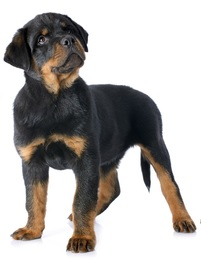

Tekst
Primeri obrade teksta
napisao Nesrecni golman
Ovde cemo prikazati primere teksta u css-u.
Fudbal se igra sa jedanaest igraca ukljucujuci i golmana.
Sta god da se desi, golman je kriv sto mu je dat gol.
O igracu
PRICA O JEDNOM IGRACU
Bio jednom jedan igrac koji je igrao za neki fudbalski klub i koji je
stalno davao golove nekom Nesrecnom golmanu. Gde god bi se nasli, na kojoj
god utakmici, on bi davao tom golmanu golove, puno golova. Publika ga je
mnogo volela.
O vremenu
Voce
Voce je veoma jestivo. Ima dosta kalorija i slatko je. Ima jako puno
vitamina. Potrebno je unositi dovoljnu kolicinu voca kako bismo se brze oporavljali.
Svako dete voli voce, pogotovo domace. Kupine, maline, banane, jabuke, samo su neki
od primera jestivog voca. Najbolje je jesti sezonsko voce, zato sto je tada voce najboljeg
kvaliteta. Ako mozes, jedi lokalno, jer je najsvezije. Nekad i nemamo izbora, pa moramo
da kupujemo i prskano. Ali to nije uopste bitno, bitno je da je puno vode i da osvezava.
O zivotinjama
Zivotinje mogu da budu jako lepe i umiljate, pogotovo psi. Oni trce vamo-tamo,
jure i skacu ko god im pridje. Ako su dresirani fino, onda mogu da budu kakvi hocete.
Mogu da budu ljuti, mogu da budu mirni. Laju stalno jer traze paznju. Sta da se radi
kada je tako. Av, av, av...
 Ovo je mali pas. Najmanji.
Ovo je mali pas. Najmanji.

Ovo je malo veci pas. Malo je odrastao.
 Ovo je najveci pas. On je vec omatorio.
Ovo je najveci pas. On je vec omatorio.
Ovo je jedan tekst o domacim zivotinjama. Pogledaj
ovde i sve ce ti biti jasno.
| uzrast zivotinje |
broj godina |
komentar |
| mali pas |
0.5 |
Ovo je mali pas. On se tek rodio i mnogo je mali. Trebace mu puno
vremena da poraste. Sta da radi kada je mali, nije on kriv. |
| veci pas |
2 |
Ovo je malo veci pas. On nije toliko mali kao onaj gore. Vec je
naucio da laje i da rezi. Ali ume da bude jako dobar kada to hoce. |
| najveci pas |
8 |
Ovo je najveci pas. Ovo vise uopste nije mali. Sad je jako umoran,
jer je star. Kada je bio mali, bio je mnogo hitar, a sada samo
posmatra i cuti. |
O pticama
slavuj sto peva
Ptice mogu biti razlicitih dimenzija. Postoji mnogo vrsta ptica. I kokoske su
neka vrsta ptica. Ima ptica sto nikad ne polete (pingvini). Ptice imaju krila i
mogu da lete. Neke lete visoko, neke nisko, a neke samo polete pa se odmah spuste,
kao kokoske na primer. Opasni su orlovi oni mogu da uhvate plen i da ga nose
u vazduhu dok lete. Niko ne voli orlove, jer su opasni.
Omiljeno voce
Povratak na glavnu css stranicu
Povratak na glavnu html stranicu